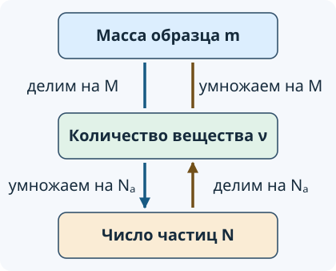

Масса молекул. Количество вещества. Постоянная Авогадро
Массу воды в стакане легко измерить на весах. Но как по этой массе узнать число молекул? Для перехода от граммов к частицам используют количество вещества. Оно связывает то, что мы можем взвесить, с тем, что приходится считать по формулам.
Масса одной молекулы и масса образца
Обозначим через \(m_0\) массу одной молекулы, через \(m\) — массу образца, через \(N\) — число молекул в нём. Для чистого вещества, если молекулы считаем одинаковыми по массе,
Масса одной молекулы воды составляет примерно \(3{,}0\cdot10^{-26}\ \text{кг}\). Уже в небольшом образце значение \(N\) получается огромным. Поэтому в задачах удобно считать частицы порциями с заранее определённым числом частиц.
Количество вещества и моль
Из определения следуют формулы:
В задачах будем округлять значение постоянной до \(6{,}02\cdot10^{23}\ \text{моль}^{-1}\). Число частиц \(N\) безразмерно, а количество вещества \(\nu\) выражается в молях. Чтобы правильно посчитать частицы, укажите, какие именно объекты считаете. В одном моле молекул кислорода \(\mathrm{O_2}\) содержится два моля атомов кислорода: в каждой молекуле два атома.
Молярная масса
Для школьных расчётов молярную массу в граммах на моль можно получить, сложив округлённые относительные атомные массы всех атомов в формуле. У воды \(\mathrm{H_2O}\) два атома водорода и один атом кислорода, поэтому её относительная молекулярная масса равна примерно \(2\cdot1+16=18\). Это число без единицы измерения. Молярная масса воды примерно \(18\ \text{г/моль}\), или \(0{,}018\ \text{кг/моль}\).

В одном моле число частиц равно \(N_\mathrm{A}\), умноженной на \(1\ \text{моль}\). Масса этого моля равна \(M\), умноженной на \(1\ \text{моль}\). Поэтому
Первая формула даёт массу отдельной молекулы. Вторая позволяет найти число молекул по массе образца.
Разобранные примеры
Из массы в число молекул
Сколько молекул в 36 г воды
Молярная масса воды приблизительно равна \(18\ \text{г/моль}\). В образце содержится
Умножим количество вещества на постоянную Авогадро:
Таким образом, в \(36\ \text{г}\) воды примерно \(1{,}2\cdot10^{24}\) молекул.
Из числа молекул в массу
Масса порции кислорода
Порция кислорода содержит \(3{,}01\cdot10^{23}\) молекул \(\mathrm{O_2}\). Их количество вещества равно
Молярная масса \(\mathrm{O_2}\) примерно \(32\ \text{г/моль}\). Значит, масса порции \(m=\nu M\approx 0{,}500\ \text{моль}\cdot32\ \text{г/моль}=16\ \text{г}\).
Масса одной молекулы
Молекула углекислого газа
Относительная молекулярная масса \(\mathrm{CO_2}\) приблизительно равна \(12+2\cdot16=44\). Поэтому \(M\approx44\ \text{г/моль}\). Переводим в килограммы на моль и делим на постоянную Авогадро:
Краткий итог
- Масса одной молекулы \(m_0\) и масса всего образца \(m\) связаны равенством \(m=Nm_0\).
- Число частиц и количество вещества связаны формулой \(N=\nu N_\mathrm{A}\).
- Масса образца и количество вещества связаны формулой \(m=\nu M\). Вид частицы определяет, какую молярную массу следует взять.
Проверь себя
Вопросы
1. В двух сосудах по одному молю газа. Одинаково ли число молекул? При каком условии одинаковы массы газов? 2. Почему для атомов кислорода и молекул кислорода используют разные молярные массы? 3. Что произойдёт с числом молекул в образце чистого вещества, если массу этого образца удвоить?
Задачи для самостоятельной работы
Для расчётов используйте \(N_\mathrm{A}\approx6{,}02\cdot10^{23}\ \text{моль}^{-1}\). Округлённые относительные атомные массы: водород — 1, углерод — 12, азот — 14, кислород — 16.
- В колбе находится \(9\ \text{г}\) воды. Найдите количество вещества и число молекул воды.
- Вычислите массу \(1{,}505\cdot10^{23}\) молекул углекислого газа \(\mathrm{CO_2}\).
- Найдите массу одной молекулы азота \(\mathrm{N_2}\) в килограммах.
- Сравните число молекул в \(8\ \text{г}\) кислорода \(\mathrm{O_2}\) и в \(8\ \text{г}\) метана \(\mathrm{CH_4}\). В каком образце молекул больше и во сколько раз?
- Образец воды содержит \(0{,}25\ \text{моль}\) молекул. Найдите число атомов водорода и число атомов кислорода в образце.